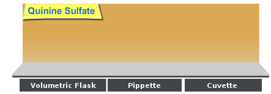

Relationship between the Concentration of a Fluorophore and its Fluorescence Intensity: Determination of Unknown Concentration of an Analyte

×
Manual
- Prepare six standard quinine sulfate solutions of following concentrations: 0.0001, 0.001, 0.01, 0.05, 0.1 and 1 ppm (parts per million) quinine in 0.05 M H2SO4. These solutions are prepared via dilution from a 10 ppm quinine stock solution in 0.05 M H2SO4. To prepare the stock solution, first exactly 6 mg of quinine sulfate dihydrate is quantitatively transferred to a 500 mL volumetric flask, dissolved by adding 25 mL of 1 M H2SO4 and finally made up to the mark with deionized water. Quinine sulfate decomposes under light. Therefore, the stock solution should be made fresh for measurements and stored in brown bottles in a cool place. Here all the solutions, including an unknown concentration solution, are shown on a concentration bar. Note that the supplied unknown sample was made as follows. A 1 mL of tonic water sample (containing an unknown concentration of quinine sulfate) was diluted to the mark with aq. 0.05 M H2SO4 in a 100 mL volumetric flask.
- Carry out the excitation and emission measurements of the solutions as follows.
- To choose an appropriate concentration of the solution whose fluorescence has to be measured, click on the pointer below the concentration bar and drag it to the desired value. In real experimental measurements, one should start with the lowest concentration solution first and proceed to next higher concentration and so on. (Why?)
- Click on the volumetric flask containing the experimental solution to take it to the instrument table.
- Take an all-side-transparent quartz cuvette (path length, 1 cm x 1 cm) by clicking on it.
- Click on the 5 mL-capacity pipette to collect 3 mL of the experimental solution which will be transferred into the quartz cuvette. In real operation, one has to set the volume to 3 mL in the pipette and an appropriate tip should be attached prior to dipping it in the solution.
- Click on the pipette to draw the solution into it.
- Click on the pipette to take it out of the volumetric flask.
- Click on the pipette again to transfer the solution into the cuvette.
- Turn on the spectrofluorimeter by clicking on the power button. In real operation, it takes approx. 30 min for initialization of the instrument.
- Click on the lid of the sample chamber of the spectrofluorimeter to open it for placing the sample in the instrument.
- To place the cuvette in the sample holder in the chamber, click on the cuvette.
- Click on the lid of the sample chamber to close it.
- To run the Excitation Spectral Scan of the sample, open the instrument set-up screen by clicking on the fluorescence measurement icon on the computer monitor.
- Select the Excitation Scan Mode on the screen.
- On the screen, enter the Emission wavelength: 450 nm, Excitation Start Wavelength: 270 nm and Excitation End wavelength: 500 nm. One chooses the Excitation Slit(nm) and Emission Slit(nm) values (here 5 nm/5 nm) and the scan speed value (here "medium") also.
- To run the wavelength scan for excitation spectrum, click on 'OK' button on the set-up screen.
- 1. Click on 'Close' button when spectral scan is complete. In real operation, the scan data are stored in the computer. The instrument stores data and therefore asks for the Sample File name. One enters a file name to save the data.
- To run the Emission Spectral Scan of the sample, open the instrument set-up screen by clicking on the fluorescence measurement icon on the computer monitor.
- Select the Emission Scan Mode on the screen.
- On the screen, enter the Excitation wavelength: 350 nm, Emission Start Wavelength: 360 nm and Emission End wavelength: 600 nm. One chooses the Excitation Slit(nm) and Emission Slit(nm) values (here 5 nm/5 nm) and the scan speed value (here "medium") also.
- To run the wavelength scan for emission spectrum, click on 'OK' button on the set-up screen. One has to be sure that the solvent blank does not fluoresce in the wavelength range of interest.
- 2. Click on 'Close' button when spectral scan is complete. In real operation, the scan data are stored in the computer. The instrument stores data and therefore asks for the Sample File name. One enters a file name to save the data.
- To take the cuvette out of the sample chamber, first click on the sample chamber lid to open it and then on the cuvette.
- Click on the lid of the sample chamber to close it.
- Click on 'Reset' button to start over the measurements.
- Select the next higher concentration solution for measurement by clicking on the concentration selection bar and carry out the Emission scan. In real measurements, if one uses the same cuvette for all the measurements, every time one should rinse the cuvette by taking a small portion of the solution to be analyzed prior to filling up the cuvette with the solution.
- Repeat the Emission scan measurements for the rest of the solutions including the unknown concentration solution.
- Collect all data by clicking on the Data tab.
- Tabulate the maximum emission wavelengths for all the concentrations. If the maximum emission wavelengths vary by a few nanometer from sample to sample, then one should note down the intensities at only one fixed wavelength which should be ideally very near to most of the maximum emission wavelengths.
- Construct a calibration plot by plotting the fluorescence intensity values at a given wavelength against the corresponding standard concentrations. Check whether linearity relationship is valid or not. Compare the linear fits first taking only the lowest five concentrations and then taking all six concentrations of quinine sulfate. Choose the appropriate straight line as the calibration line.
- By using the calibration line, determine (both graphically and mathematically) the concentration of the unknown sample analyzed and then the concentration of the original tonic water sample.


